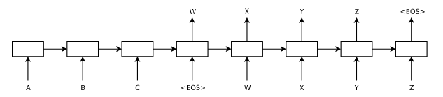
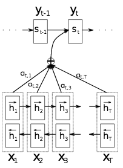
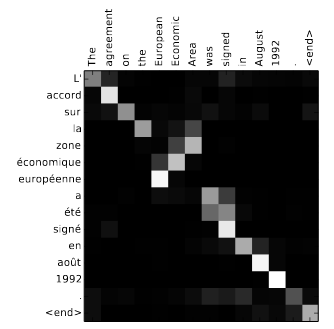
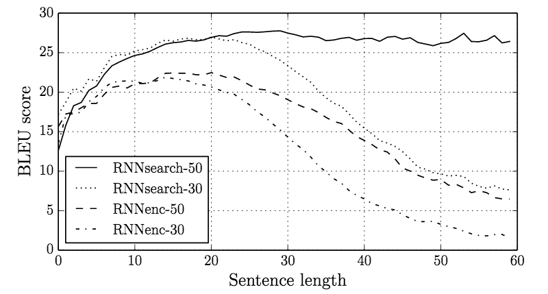
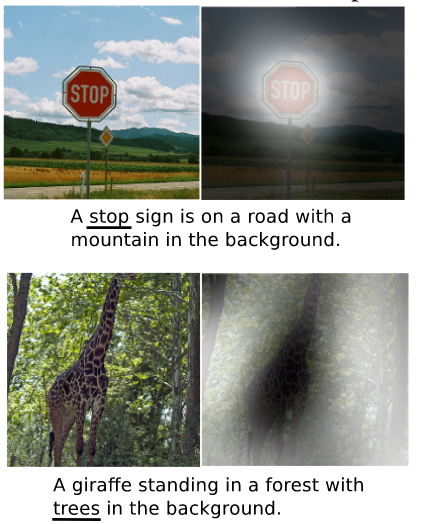
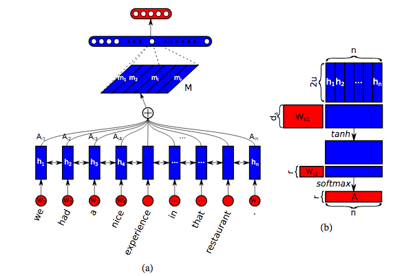
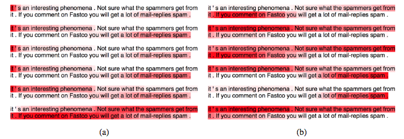
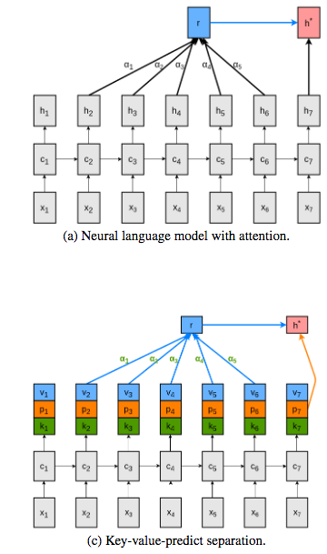
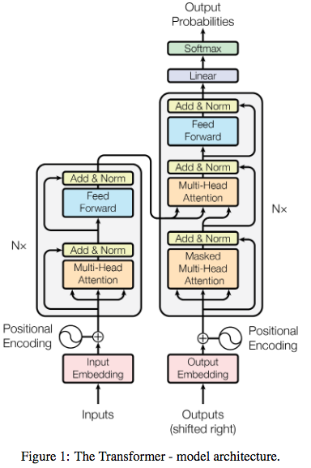

A Lit Review of Attentional Mechanisms
Introduction
The concept known as attention has become increasingly prevalent in deep learning research in the past few years. Here I share some notes/tutorial and a quick lit review of the major developments in this area from about 2014 to 2018. Naturally, I'm sub-selecting from the set of all important works here, but the ones I highlight will provide a foundational understanding for you to continue on your own. And to be perfectly clear, I am definitely not talking about the Neuroscience of attention, but rather a computational construct in deep learning that is termed "attention" (continuing the tradition of anthropomorphizing ML ideas).
This post ended up being a bit long, so I've broken it down with the outline below, if you wish to skip around.
Contents
Machine Translation and seq2seq
Sequence Attention
Important Variations
Recent Developments
References
Machine Translation and seq2seq
To set up the story here, we first need to dive into the topic of machine translation (MT) and do a quick overview of a very successful model there called seq2seq. The task to solve in MT is to create an algorithm that can automatically translate sentences and phrases between two different languages. In much the same way that human translators do their work, the goal is "read" a sentence in one lanaguage (let's say English) and to output a correct translation in a different language (let's say German). An even more challenging version is real-time-translation, where we are not able to read the entire input sequence before we are forced to begin the output translation (this is what U.N. translators have to do every day). Using neural networks to conduct machine translation is known as NMT and there has been a long history of research in this area. However, I'll focus only a particularly powerful method known as seq2seq.
Sutskever et al's 2014 paper Sequence to Sequence Learning with Neural Networks introduced the model known as seq2seq in order to solve the Machine Translation problem in a way that requires no knowledge of grammar and syntax and requires no pre-processing and hand-engineering. The idea is create a two-part network with an encoder followed by a decoder. At a general level, the encoder is responsible for taking in an input sequence (say, an English sentence) and processing that sentence to produce some compression/representation of the semantic content of that sentence. As we'll see, this compression typically involves representing the entire sequence (which could be any length) by a fixed-size vector. Then the decoder is responsible for taking as input this vector representation of the "meaning" of the sentence and then producing and output sequence in the other language (let's say German). If the encoder and decoder are doing their jobs properly, then the output sequence should be a valid German translation of the English sentence. In order for this to be the case, then the compressed output of the encoder will have to, in some strange way, capture the semantic meaning of the English sentence.
In implementation, Sutskever et al. use an RNN (LSTM) for the encoder and a separate RNN for the decoder. Naturally, the weights of these RNNs must be different since they are (i) learning sequential patterns over the two different languages and (ii) take as input/output two entirely different vocabularies. The encoder RNN reads the entire input sequence and then it outputs the final RNN hidden state vector. This is the way of representing the whole sequence as a fixed vector. We can similarly think of this as an embedding of the input sequence into a lower dimensional vector space. Given this vector, the decoder uses it as a starting seed and proceeds to predict and output sequence over the German vocabulary. One interesting concept to note is that the sentence embedding vector is the only passage of information between the English and German components of the model. Thus, if the translation is successful, then it means that all the semantic information about the sentence (in both languages!) much be contained solely in that vector. In this sense, the embedding is a language-agnostic representation of a semantic idea - it encodes the meaning of the sentence in a way that is independent of both English and German, it is the "in between" representation. For this reason, the authors refer to this representation as the "thought vector" of the sentence and they show some cool examples of semantically similar sentences clustering nearby each other in this representation. At any rate, this process of encoder-embedding-decoder is the basis of seq2seq and is all we need for machine translation.
A diagram from the paper is shown above. Along the bottom left is the input sequence in the input language (whose vocabulary includes A B and C) and toward the top right is the translation into the output language (whose vocabulary includes W X Y and Z). Note that all we need to train this model is a large dataset of paired translated sentences. This model has no concept of English or German grammar. The hope is that with enough example sentences to learn from, the model will learn correlations between the two languauges and pick up correct grammar/syntax as a side effect. Indeed, the authors show the amazing result that this encoder-decoder idea works extremely well for translating between any two languages for which you have sufficient training data. This seq2seq idea was extremely successful, it is hard to over-state how important this development was in NMT. However, it was eventually noticed that this idea had limitations with very long sequences.
Sequence Attention
The difficulty with seq2seq is due to an inherent limitation with LSTMs: with longer and longer sequences, it becomes very challenging to accurately compress/embed them. Seq2seq could perform very well for modest-length sentences, but once you tried to translate sentences that were tens of words long, then the quality of the translation starts to slip. Recall what the encoder is doing: for an arbitrary-length sequence, the encoder needs to represent that sequence as a fixed-size vector that emebeds all the meaning of that sentence. And recall that this was accomplished with an RNN: as the whole input sequence is processed, the sentence embedding is the final hidden state of the RNN. As an input sentence gets longer and longer, this becomes an ever more challenging task to do correctly. Empirically, it was noticed that these encoding mechanisms were unable to do the job with very long sequences. That is, LSTMs (as powerful as they are) were simply unable compress the entire content of the sentence into its hidden state. Therefore, these RNN encoders needed a helping hand in order to handle long sequences and the mechanism proposed is called attention.
The sequence attention mechanism was first demonstrated by Bahdanau et al. 2014 and quickly followed-up with an exploration/expansion paper from Luong et al. 2015. I'll begin with deep dive into the Bahdanau paper and then we'll take a look at some of the variations expored in Luong.
With seq2seq, we have an encoder RNN that produces a sequence of hidden state vectors \((\vec{h}_1, \vec{h}_2,...,\vec{h}_N) \) for a length-\(N\) input sequence of words (or word vectors) \( (w_1, w_2,...,w_N) \). As the encoder is implemented with an RNN, the mechanism for producing each hidden state \(\vec{h_t}\) is dependent upon the current word \(w_t\) and the previous hidden state \(\vec{h}_{t-1}\), \[ \vec{h}_t = f(w_t, \vec{h}_{t-1}), \] for some function \(f(.,.)\) implemented by the RNN. The output of the encoder is a context vector \(\vec{c}\) which is an embedding of the input sequence. This is what is passed to the decoder. The context vector is, in some way, derived from the sequence of hidden states (which implicitly encode all information about input words). For some function \(g()\), \[ \vec{c} = g(\{\vec{h}_1, \vec{h}_2, ..., \vec{h}_N\}). \] As described previously, the typical approach is to let this context vector simply be the final hidden state such that \( g(\{\vec{h}_1, \vec{h}_2, ..., \vec{h}_N\}) = \vec{h}_N\). Given the limitations with compressing long sequences into \(\vec{h}_N\), the goal of attention is to come up with a more sophisticated mechansim for \(g()\) that allows the encoder to remember more of the input sequence. Further, instead of a single context vector \(\vec{c}\) which is the seed for the decoding but then never really used again, it might be beneficial to provide a new context vector \(\vec{c}_t\) at the time that each word of the output sequence is decoded.
The attention mechanism proposed by Bahdanau takes two important divergences from the seq2seq approach. First, there is a new context vector \(\vec{c}_t\) computed for every step of the translation sequence. Second, that context vector \(\vec{c}_t\) is not simply one of the hidden states from the input sequences, but is intead a weighted combination of the hidden states from the input sequence. Most importantly, that relative weighting is not static, but will change at every time step \(t\) so that relative importance of the input words can be dynamically adjusted depending on which word in the output sequence is being translated. Said differently, as the output translation proceeds from one word to the next, the context vector is re-weighting the input sequence hidden states in an attempt to highlight which input words are most important for a particular output word. For this reason, this computational concept has been given the nickname "attention", since the decoder gets to focus on some input words more than others, and can adjust that focus throughout the decoding.
Bahdanau Attention (Additive Attention)
Let's jump into the details of Bahdanau's attention mechanism. It might be easiest to start at the "end" of the process. Given a sequence of input hidden states \( \{\vec{h}_1, \vec{h}_2, ..., \vec{h}_N\}\), we will compute at each timestep a context vector \(\vec{c}_t\) as a sum of the hidden states with the relative weightings according to an attention-weighting vector \(\vec{a}\) of length-N, \[ \vec{c}_t = \sum_{j=1}^N a_j \vec{h}_j. \] To be concrete, the vector \(\vec{a}\) gives us the relative importance of each word in the sequence. So if \(a_4\) and \(a_8\) are very large, then our context vector will be heavily weighted toward emphasizing the hidden state vectors corresponding the 4th and 8th words in the input sequence. And to be explicit, I've just denoted \(\vec{a}\) as if we calculate it only once. But of course we will compute a new attention vector at each timestep. So it would be most accurate to denote it as \(\vec{a}_t\) and denote the context vector as \(\vec{c}_t = \sum_{j=1}^N a_{tj} \vec{h}_j\), where \(t\) indexes timesteps of the output translation.
The next question is - how do we compute the weights in the attention vector \(\vec{a}_t\)? A very simple and dumb thing to do would be to have a fixed attention vector \(\vec{a}\) for all timesteps and to have the weights decrease in some monotonic fashion over the distant past of the sequence (kind of like a sequence ARIMA model). We could do that, but of course that's not what we want. Instead, we want \(\vec{a}_t\) to be able to be non-monotonic (can focus weight on any words no matter their position) and to be computed uniquely at each timestep. We'll define a similarity function between two vectors \(s(\vec{u}, \vec{v})\). For the moment let's not worry about how \(s\) is implemented, but just note that it will take as input two vectors and will output a similarity score.
Recall that our goal is to find words in the input sequence that will be helpful in predicting the next words in the output sequence. Adding a little more notation, note that our decoder RNN will have its own hidden state vectors \(\vec{z}_t\) that contribute to predicting output tokens \(y_t\). Our decoder RNN then implements a function such as \(\vec{z}_t = f'(\vec{z}_{t-1}, \vec{c}_t, y_{t-1}) \). The next hidden state (and output token prediction) depends on the previous hidden state in the decoder RNN (\(z_{t-1}\)), the previous word output of the decoder (\(y_{t-1}\)) and the context vector we have constructed for this timestep (\(\vec{c}_t\)). With this extra notation, the things we want to compare will be the representations of the words in the input sequence (such as \(\vec{h}_t\)) and the representations of the words of the output sequence (such as \(\vec{z}_t\)). Given that, we are going to use our similarity function \(s\) to compute (at each timestep) the similarity between the previous decoder hidden state and all the encoder hidden states: \(s(\vec{z}_{t-1}, \vec{h}_{t'}), \forall t' \in \{1..N\} \). Again, this is just quantifying the similarity between the input words and where the output sequence needs to go next. In fact, Bahdanau refers to the similarity function \(s\) as an alignment function, and perhaps this is an easier way to think about it. That is, given that we need to transcribe word \(t\) based upon \(\vec{z}_{t-1}\), what would be the best words in the input sequence to align to or pay attention to.
The function \(s\) will be some unknown and highly-parameterized function that we learn using a feedforward module. Remeber, it is not the case that \(\vec{a}\) is a set of free parameters that we will learn during training time and then fix at inference time. Instead, \(\vec{a}\) is dynamically generated at inference time and so we learn the free parameters of the function \(s()\) that gets us to \(\vec{a}\). This function \(s()\) can be computed in many ways and an exploration of this facet is a big part of the Luong paper. In Bahdanau, they implement it as a feedforward network where \[ s(\vec{z}_{t-1}, \vec{h}_t) = \vec{v}^T tanh(W \vec{z}_{t-1} + U\vec{h}_t), \] where the free parameters of this network are \(\vec{v}, W, U\). Again this similarity/alignment function will give a high score to any words in the input sequence that are relevant to predicting the next output word.
Finally, these similarity scores are normalized with a simple softmax over the \(N\) timesteps so that the attention vector \(\vec{a}_t\) becomes a true probability weighting: \[ a_{tj} = \frac{exp \left(s(\vec{z}_{t-1}, \vec{h}_j) \right)}{\sum_{j=1}^N exp \left(s(\vec{z}_{t-1}, \vec{h}_j) \right)} . \]
A diagram of the overall mechanism is shown below. We see that each decoder hidden state \(s_t\) (in my notation this is \(z_t\)) receives as input a weighted combination of the encoded hidden states, with weights given by \(a_{t,j}\). And just to reiterate, these weights \(a_{t,j}\) correspond to which input words are being "attending to" during the output translation of word \(t\).
It is interesting to visualize these attention/alignment vectors. The figure below shows a heatmap of these vectors. In this case, let's call the input language French (along the left axis) and the output language English (along the top axis). You can think of a column of this heatmap as a visualization of the relative weights inside \(\vec{a}\) at each timestep. When viewed as this matrix over all timesteps, we see a visualization of the "alignment" between the two languages during the translation task. For words that have high weight along the diagonal, this corresponds to where there is an easy 1-to-1 cognate between French and English and the translation is simple. However, for some parts of this sentence, it is important to attend to multiple context words in order to correctly translate (for example, "European Economic Area"). In these instances we see that the attention vector is distributed across a couple words of the input sentence.
This attention mechanism provides an impactful "memory boost" to the LSTM, allowing the network retain and refer to information about the whole input sequence. While the attention and alignment vectors are very interesting to explore, the overall results on long sequences are very convincing. The figure below compares the model performance (BLEU score) of the original seq2seq type model (referred to as RNNenc) to the new attentional model (referred to as RNNsearch). Along the horizatonal axis is the model performance as a function of increasingly longer input sequences. We can see that the originial seq2seq does quite well until we get to sentences of about 20 words or more, then the performance drops off and the model becomes more inaccurate (see RNNenc-50). In sharp contrast, this attention model (see RNNsearch-50) not only achieves higher performance for short sequences, but also shows no degredation of quality for sequences as long as 60 words. This very exciting result shows that the memory limitation of LSTMs can be overcome by adding in this attention mechanism.
Luong Attention (Multiplicative Attention)
The promising advances introduced by Bahdanau were explored a bit further in Luong et al's Effective Approaches to Attention-based Neural Machine Translation . One area of exploration was the nature of the similarity function. Recall that Bahdanau defined \[ s(\vec{a}, \vec{b}) = \vec{v}^T tanh(Wa + Ub). \] One can recast the above by creating a concatenated vector \([a;b]\) and writing \( s(\vec{a}, \vec{b}) = \vec{v'}^T tanh(W' [a;b]) \), for some other matrix \(W'\). Luong et al note that this is but one of several potentially interesting ways to define a feedforward network for a similarity function. The three they explore are
| \( \vec{v}^T tanh(W [a;b]) \) | concat |
|---|---|
| \( \vec{a}^T \vec{b} \) | dot |
| \( \vec{a}^T W \vec{b} \) | general |
The simplest of these is obviously the dot-product similarity which contains no additional free parameters. Luong et al show some interesting improvements when considering these alternative formulations the similarity function.
They also explore a differentiation between "global" and "local" attention, as well a differentiation between "soft" and "hard" attention. The model put forth by Bahdanau uses what they call global attention: every single word of the input sequence is in consideration for the attention vector. They note that this could be wasteful, if only small clusters of words and phrases are relevant. To explore this idea, they introduce local attention where a window of a smaller size is considered at each timestep. This window can be placed anywhere in the input sequence (not just starting at the word \(t\) or \(t-1\)), so this is still an improvement beyond a look-back window kind of idea. The benefit here is the attention vector here focuses on small "patches" of the sequence, instead of disjoint words. This is more computationally efficiently and seems a bit more in line with how we probably read text ourselves. A final variation they explore is the idea of "hard" attention. In the Bahdanau work, the attention vector is length-N vector which spans the entire input sequence. Thus, every single word of the input sequence receives at least some amount of weight and the attentional vector is somewhat smoothed over the input sequence. An alterative idea would be to select a subset of the words which receive some attentional weight whereas the rest will receive exactly zero weight. This "hard" attention indudes a sparsity in the attention vector and allows more precise attending. This sparse mechanism is no longer differentiable but Luong describe a Variational MC approach that allows this model to be fit. They show that localized attention as well as the modifications of the similarity function can lead to notable improvements upon Bahdanau's model.
The work of Bahdanau used attention to bring an exciting improvement to seq2seq models. This mechanism provides the model with a way to overcomes its inherent memory limitations and to remain successful in very challenging regimes. This attentional mechanism was, at the time, only applied to sequence problems in the context of MT, but since then has been applied in many different variations and expansions.
Important Variations
Show Attend Tell - Visual Attention and Image Captioning
An interesting idea that was directly influenced by the work of Bahdanau and of Luong is the paper Show Attend And Tell by Xu et al. 2016. This group is tackling the problem of automatic image captioning: if I give you an image, can your algorithm output a text caption of what is going on in that image. There have been several interesting attempts at this problem, including the well-known work from Karpathy and Li , which takes a different approach than the one described here. In Xu 2016, they combine a deep CNN approach for feature map extraction with an RNN for caption-transcription that has an attention mechanism. Specifically, as the RNN outputs each token of the caption sequence, it can non-uniformly attend to different locations on a spatial grid of the image (well, more precisely of the feature maps resulting from the deep CNN). Thus, before deciding what the next word in the caption will be, the RNN uses as context not only the previous words, but also a weighted "glimpse" of the image features. They show that the result of this matches what we'd hope for: as the RNN transcribes various words of a sequence, it attends to specific portions of the image in order to do so. Some example are shown below.
In this figure, each image in accompanied by a sentence which is the output caption of the model. Right off the bat, we must acknowledge that this is quite impressive - these sentence captions are really convincing and accurate. Further, this figure also shows a little bit about how these decision are made. In each case, we are shown a heatmap which visualizes the "attention over the image" at the moment of producing the underlined underlined. For example, the top image shows that as the word "stop" emitted from the network, the attentional componenet is focusing on pixels around the stop sign. As another example, the bottom image of the figure shows the attentional weighting as the network is outputting the word "trees". Notice that the network is "attending" to the background pixels of the image and not the foreground pixels that correspond to the giraffe. Presumably if we saw the snapshot of when the network is outputting the word "giraffe" then we would see the opposite pattern, with most of the focus on the pixels in the giraffe object. In this work, the idea of attention has been extended in a very natural way to be applied to locations in an image. This works particularly well for a task which is a bit rare: we have an input image and we must output a sequence. This is inherently a bit different than other image analysis tasks such as classification, object detection, and segmentation. Previous work in object detection (SSD, MaskRCNN) proceeds through mechanisms of "region proposals", which one could say are attention-like in spirit, but are quite different than the specific ideas we're discussing here. In this image captioning task, attention becomes uniquely useful, since the network must output a sequence, it can "focus" on different portions of the input (image) while transcribing different words of the sequence.
Self Attention
Another interesting variation (that becomes very impactful in the last couple years) is the idea of self-attention. To be transparent - I'm not 100% sure of where this idea makes its very first appearance, but I'll focus on an important early contribution that addresses a related set of NLP problems. The paper A Structured Self-Attentive Sentence Embedding from Lin et al. 2017 describes a self-attention mechanism that assists in learning embeddings of sentences. Presuming that you're familiar with word embeddings, the next challenge is how to we embed sequences of words - whether they are sentences, paragraphs, or documents. There have been interesting developments on this topic of how to do hierarchical sequence embeddings, and I'll not dive into these. However, in Lin 2017, they propose to use attention in order to embed abitrary-length sentences into a fixed vector representation. Further, they generalize the idea of attention and introduce the idea of multiple attention.
They frame their model in the context of a typical NLP sequence classification task (sentiment analysis), but note that this task could be swapped out for any other. For sequence classification, their model begins in a common way: a bi-directional LSTM that processes the input sequence to produce a sequence of hidden state vectors. The question then becomes what to do next in order to get to the output classification problem. A common approach might be to use only the final hidden state (once the whole sequence has been processed) since this surely is encoding the context and content of the entire sequence. That final hidden state would then be a way of compressing an arbitrary-length sequence in a fixed-size vector and that vector could then be fed into a simple downstream layer for classification. Alternatively, one might aggregate the sequence of hidden state in some way (summation or averaging), though this would be lossy. These limitations feel very similar to problems we discussed with seq2seq, and Lin et al propose to use attention as a new way of handling this problem. However, note that unlike in seq2seq there is no output sequence of any kind - we only have a classification problem. So we are not attending to various words in order to align tokens between two sequences. Instead, we have only one input sequence and we might use attention over only that sequence in order to non-uniformly weight the components of the sequence so they can be combined into a fixed representation. For this reason, the term "self-attention" has become popular.
A little more detail is worthwhile. Recall, we have an input RNN of any kind we wish (theirs is a bi-directional LSTM) which gives us a sequence of hidden state vectors each of length \(u\). \[ H = (\vec{h_1}, \vec{h_2},...,\vec{h_N}) \] We aim to devise a weighted combination of the \(N\) hidden states. We'd like to find a length-N vector \(\vec{a}\) for the relative weightings of each hidden state, then our final representation would simply be \(\vec{m} = \sum_{j=1}^N a_j \vec{h_j} \). Much like before, we don't want to learn \(\vec{a}\) directly such that these would be fixed weightings for any sequence. Instead, we want \(\vec{a}\) to be (potentially) different for any input sequence. So we are implicitly learning a function that takes in an input sequence \((\vec{h_1}, \vec{h_2},...,\vec{h_N})\) and outputs \(\vec{a}\). And again, to learn this function, we'll use a simple feedforward module with its own learnable parameters. In particular we'll have, \[ \vec{a} = softmax(w_{s2} tanh(W_{s1}H^T) ), \] where the free parameters are weights of the d-by-u matrix \(W_{s2}\) and the d-by-1 vector \(w_{s2}\), and d is a hyperparameter of our choosing. As noted, this results in a length-N vector \(\vec{a}\) that provides the relative weightings of each hidden state, which then leads to a fixed size vector representation \(\vec{m}\) for the sentence. Again, these weightings \(\vec{a}\) are dynamically generated for any uniqute input sequence, such that the learned weights \(W_{s2}\) and \(\vec{w_{s1}}\) provide the best "attending" to compress any input sequence into a fixed representation that can solve the downstream task at hand, which is sentiment classification in their example.
The authors then go on to generalize this idea in a clever way. The result of the above treatment is an attention vector \(\vec{a}\) which dictates the relative importance of each word in order to solve the downstream task. But we only get one attentional "glimpse" at the sequence in order to solve the task - what if there are multiple useful facets of the sentence to pay attention to? In this spirit, the authors introduce the idea of multiple attention. Instead of a single attention vector \(\vec{a}\), the attentional mechanism will output \(r\) different attention vectors, each of which (hopefully) attends to different components and aspects of the sentence. Then, our fixed representation of the sentence is not the single length-u vector \(\vec{m}\), but is instead an r-by-u matrix \(M\) that represents the sentence when viewed through the \(r\) different attentional lenses.
Accomodating this generalization is quite easy, we simply adjust \(\vec{w_{s2}}\) to be no longer a vector, but rather an r-by-d matrix \(W_{s2}\). Everything else remains the same, and we get an attentional matrix \[ A = softmax(W_{s2} tanh(W_{s1}H^T) ) \] from which we derive the final representation \(M\) as \[ M = AH. \] A schematic of this model is shown below.
The authors demonstrate that this idea turns out to be quite useful and interesting. Importantly, we want the attentional matrix \(A\) to be somewhat diverse - it would be useless if all \(r\) attention vectors were attending to the same things. So the authors apply a regularization to \(A\): they penalize the Frobenius Norm of the matrix \(AA^T - I\) in order to induce the rows of \(A\) to be as different as possible. Some example outputs are shown below, with the attentional weight on each word indicated in red. In particular, we see that the regularization tactic here is quite useful for ensuring that the multuple attention idea actually works. On the left we see the weightings of 6 different attentional vectors, without the penalization. Notice that the first 4 are nearly identical, attending to the beginning and the end of the sentence. The 6th one is a bit different, attending to the middle of the sentence. In contrast, on the right of the figure are the same results but with the penalization. We indeed see a bit more diversity in the attention vectors, with some attending to sub-sets of the sentence, some distributed across the whole, some at the beginning, and some at the end.
 This paper from Lin et al. introduces two important ideas that end up becoming really popular: self-attention and multiple attention. As I'll discuss shortly, these are the bedrock of the Transformer Network.Key Value Attention
A final thing I want to introduce in this section is some terminology that is a little off-putting at first, but forms a basis for important work yet to come. I'm primarly referring to ideas presented in (Daniluk et al. 2017) , which also receives a description in this blog post. Let's look again at the general process of computing an attentional context vector. Despite all the differences and variations described above, the following generally holds when we aim to compute context vector \(c_i\) for a word \(w_i\). For some similarity function \(s(a,b) \), we compute the pairwise similarities \(s_{tj} = s(h_t, h_j)\) between the hidden states at all timesteps \(j\) and the current timestep \(t\). We then normalize all these scores into weightings \[ a_{tj} = \frac{exp(s_{tj})}{\sum_k exp(s_{tk})} \] This weighting factor \(a_{tj} \) tell us how much to "consider" or attend to each of the \(j\) previous time steps, when we are concerned with the \(t_th\) time step. Then our context vector (or attention vector) at time \(t\) is simply the weighted sum of the previous hidden states, as weighted by these attentional scores. \[ c_t = \sum_j a_{tj} h_j. \] I'll now introduce an alterntaive nomenclature to give us another way of thinking about these computations. Our similarity function \(s(a,b)\) is telling us how similar any two entities are. In particular, we usually have one entity of interest at time \(t\) and are interested in computing the similarities between that entity and all other entities in recent past, \(s_{tj} = s(h_t, h_j)\). For this reason, we might refer to the entity at time \(t \) and its associated hidden state \(h_t\) as a Query. And we might refer to the remaining entities for all other timesteps \(j\) as simply the Keys to which we are comparing. So our similarity function \(s(a,b)\) can be thought of as computing the similarity between an input Query and a Key : \(s(Q,K_j)\). Our alignment score for each key is still normalized \[ a_{j} = \frac{exp(s(Q, K_j))}{\sum_k exp(s(Q,K_k))}, \] And our final attentional vector is composed of the weighted-sum Values of our entites of interest \[ Attention(Q, K, V) = \sum_j a_{j} V_j, \] where here the Values \(V_j\) are the just hidden states as before. Nothing tricky here, just new notation/terminology. But when viewed in this way, we see the interesting difficulty that is pointed out by Daniluk et al., 2017. The hidden states \(h_t\) and \(h_j\) are serving multiple purposes here. First, they form the Query/Key vectors that are queried for similarity comparison. Second, they form the Values that are used to represent attention weights. And third, they need to encode language content which informs future predictions (their primary purpose in Language Models). The authors point out that expecting these vectors to perform all three of these functions might be an overloaded usage and might impair training. Instead, their proposal is have separate sub-segments of these vectors that are used only is sub-sets of these tasks. I'll omit the details, but the basic idea is shown in the diagram below. Each hidden state vector is broken into 3 non-overlapping segments and each serves a different role in the function of Keys, Values, and Predictors. They show some intersting improvements with their approach, and importantly, their notation/terminology impacts future work such as (Vaswani et al. 2017), where the concept of Query, Key, Value attention makes a big appearance.
Recent Developments
Let's recall some of the basic motivation for attention. While seq2seq was extremely successful, it was observed that such models tend to struggle with the longest sequences. The reasoning was that while the RNN is able to usefully compress the context of the sequence into the final hidden state, there is simply a limit to this ability for longer sequences. Eventually such a model is not able to effectively store all the necesarry information into that final hidden state. Even LSTMs, powerful as they are with cell memory and gates, have this empirical limitation. So attention was introduced as an "assist" to help out in cases where the cell memory is unable to fully remember long-term sequences. And indeed we saw how this assistance was hugely impactful and overcomes the limitations that LSTMs might always be stuck with.
But this seems to imply the following question we might ask from the opposite perspective: if attention is here to help boost the RNNs deficiencies, what then is the RNN really even needed for? Might it be possible to omit the RNN entirely from these kinds of problems? A recent paper from Google, aptly named Attention is All You Need, provides the striking answer to this question.
In this work, (Vaswani et al. 2017) introduce the Transformer Network. Their primary motivation is to demonstrate that when it comes to sequence analysis tasks such as classification or translation, we simply don't need convolutional networks or recurrent networks - no, attention is all we need. As I've mentioned previously, the primary components of Transformer are (i) self-attention and (ii) multiple attention. A diagram is shown below.
You'll notice a prominent role for what they term "Multi-Head Attention" which is similar to what we've discussed previously. And the notion of self-attention is what is at play here, since we have no RNN hidden states to worry about. Much like seq2seq, there is an encoder module and a decoder module. But each of these are composed of a stack of (in their case 6) sub-modules composed of Multi-Head Attention.
I won't do a detailed description of this paper, I think to do it justice would require an entire post or two. And further, to be completely honest, I find this paper to be extremely terse and nearly impenetrable upon the first several readings. Getting comfortable with the Query, Key, Value nomenclature is useful, but not really enough to get a detailed understanding. This paper does very little to help the unaccustomed reader understand their model, and little is to be gained from Google's PR explanation of this work. However, my hands-down favorite tutorial/explanation of this paper comes from Jay Alammar, The Illustrated Transformer. Jay does an awesomely thorough job of walking through the components of this model and how they fit together. I highly recommend you read carefully through Jay's post if you're interested in understanding how Transformer works.
At any rate, Vaswani et al. demonstrate that the Transformer Network does very well on many tasks - either acheiving SOTA or comparable in many settings, all without convolutional or recurrent networks. This paper has generated a lot of excitement and clearly cemented a role for self-attention as foundational tool in deep learning.
As a final example, there has been additional recent excitement about a paper from a different group of researchers in GoogleAI Language: BERT. BERT stands for Bidirectional Encoder Representations from Transformers and in this work the authors aim to push into new directions of pre-training and transfer learning for NLP tasks. In much the same way that word2vec formed a basis for transfer learning in all word-based tasks, the BERT authors add another level of complexity here. I'll also omit a detailed description of the BERT paper, but the main point is that they use self-attention and multiple attention (Transformer) in tandem with some new unsupervised learning tasks they divised (which helps them get toward bi-directional learning). The result is a set of learned embeddings that generalize extremely well to many disparate NLP tasks. The findings here are quite convincing and exciting.
Conclusion
Naturally, this post is just a brief selection of a few papers, and an omission of many important ones as well unfortunately. But I hope to have shed some light on the primary developments in the last 3-4 years in this area of deep learning research. The limitations of RNNs in the context of machine translation led to the introduction of attention. This idea proved powerful and was quickly adopted into many variations including visual attention and self-attention. This last year at ICLR and NeurIPS have seen a very prominent role for self-attention (Transformer Network) and we are surely to see much more in the near future.Good Reads
Sequence to Sequence Learning with Neural Networks
http://ruder.io/deep-learning-nlp-best-practices/index.html#attention
Neural Machine Translation by Jointly Learning to Align and Translate
Effective Approaches to Attention-based Neural Machine Translation
Show, Attend and Tell: Neural Image Caption Generation with Visual Attention
Frustratingly Short Attention Spans in Neural Language Models
BERT: Pre-training of Deep Bidirectional Transformers for Language Understanding
https://lilianweng.github.io/lil-log/2018/06/24/attention-attention.html
http://www.wildml.com/2016/01/attention-and-memory-in-deep-learning-and-nlp/
A Structured Self-Attentive Sentence Embedding
https://www.alibabacloud.com/blog/self-attention-mechanisms-in-natural-language-processing_593968